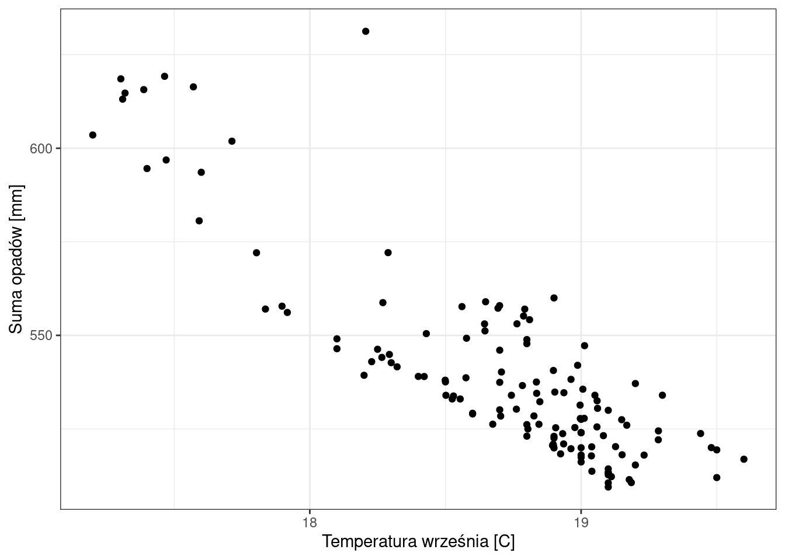
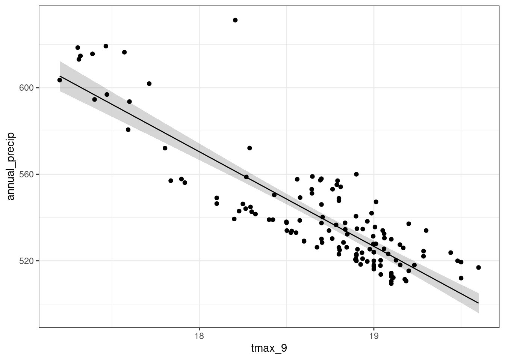
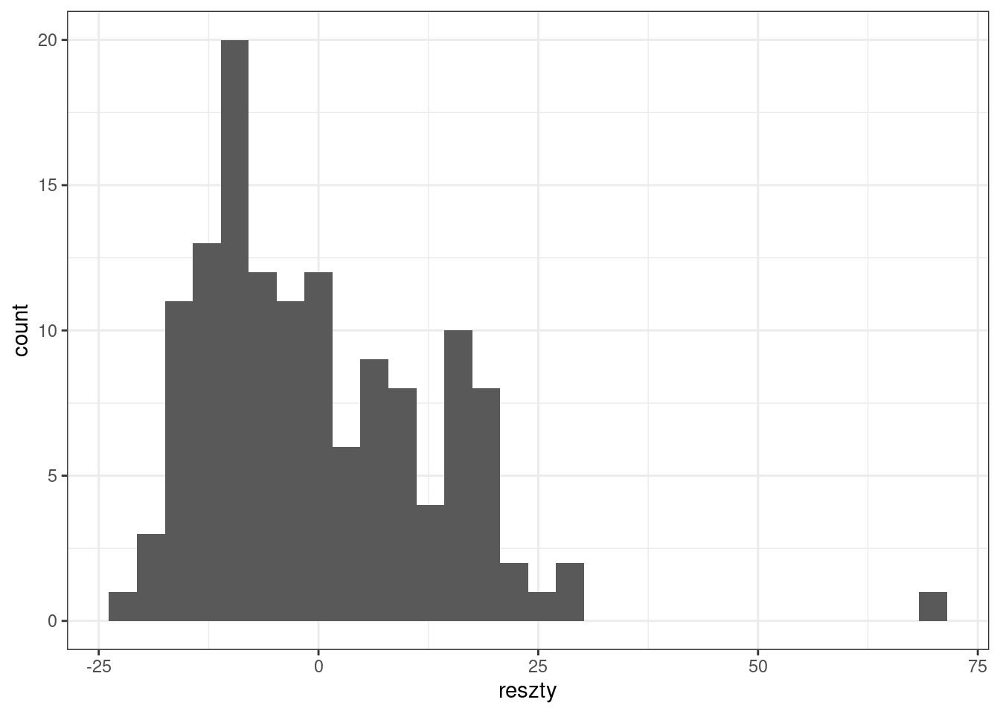
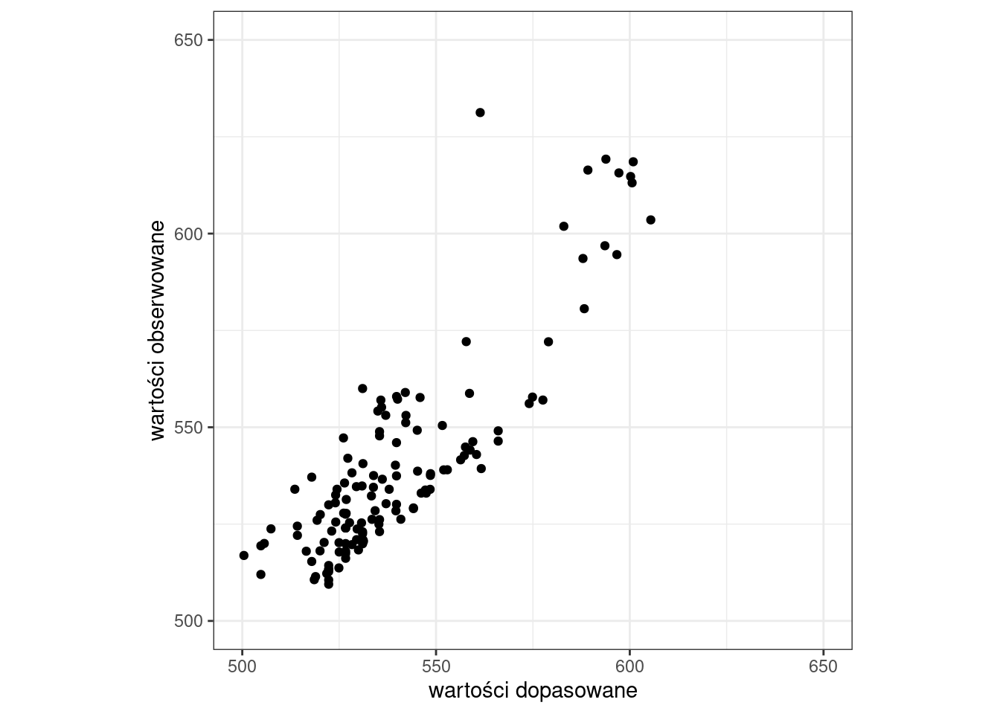

y ~ x #czytamy y zależy od x 19 Analiza regresji
Główną ideą regresji jest wyjaśnianie, przewidywanie, prognozowanie danych dla pewnej zmiennej (określanej jako zmienna zależna, objaśniana, wyjaśniana) na podstawie innych zmiennych (zmienne niezależne, predyktory, zmienne objaśniające, zmienne wyjaśniające).
Budowa liniowego modelu zależności między dwoma zmiennymi składa się z trzech etapów:
Określenie czy między zmiennymi istnieje zależność.
- wykonanie wykresu rozrzutu
- współczynnik korelacji
Budowa modelu.
Analiza wyników modelu (w tym ocena dopasowania modelu).
Po zbudowaniu modelu oraz ocenie dopasowania modelu można go wykorzystać do wykonania predykcji.
19.1 Podstawowe pojęcia
Analiza regresji tworzy funkcję matematyczną opisującą zależność pomiędzy badanymi zmiennymi: zmienną zależną, którą chcemy przewidywać na podstawie zmiennych niezależnych.
Zmienna zależna (inaczej zmiena objaśniana, zmienna wyjaśniana, zmienna przewidywana) - zmienna, której wartość chcemy przewidywać na podstawie modelu. W modelu może być tylko jedna zmienna zależna.
Zmienne niezależne (inaczej predyktory, zmienne objaśniające, zmienne wyjaśniające) - zmienne używane w modelu do oszacowania wartości zmiennej zależnej. W modelu może być wiele zmiennych niezależnych.
Model regresyjny - model, który będzie z założonym błędem statystycznym przewidywał wartość, poziom danej cechy.
- W praktyce zawsze występuje pewna wielkość błędu oszacowania. Ideą regresji jest zminimalizowanie tego błędu oszacowania do tego stopnia, aby model był przydatny w swoich prognozach
- Model regresyjny możemy zawsze zbudować, jednakże tylko te modele będą “wartościowe”, w których błąd oszacowania będzie relatywnie niski.
Model regresji liniowej to model, który zakłada liniową zależność między zmienną zależną a zmienną niezależną. Pozwala on na przewidywanie wartości zmiennej zależnej na podstawie wartości zmiennej niezależnej.
Metoda najmniejszych kwadratów błędów - metoda, która ma na celu dopasowanie do zebranych danych, takiej lini (dla regresji liniowej), która jest do nich najlepiej dopasowana - tzn. dla której suma kwadratów błędów będzie najniższa.
19.2 Regresja liniowa
- Najprostszym wariantem regresji jest regresja liniowa.
- W regresji liniowej zakłada się, że zależność pomiędzy zmienną objaśnianą (\(y\)), a objaśniająca (\(x\)) jest zależnością liniową.
- W regresji liniowej zakłada się, że wzrostowi jednej zmiennej (zmienna objaśniająca) towarzyszy wzrost lub spadek drugiej zmiennej.
Regresja liniowa opisywana jest wzorem:
\[y_i = \alpha + \beta x_i + \varepsilon_i\]
- \(y\) - zmienna zależna (zmienna wyjaśniana, przewidywana)
- \(\alpha\) - wyraz wolny
- \(\beta\) - współczynnik kierunkowy dla zmiennej \(x\) (mówiący o nachyleniu prostej regresji)
- \(x\) - zmienna niezależna (predyktor, zmienna wyjaśniająca)
- \(\varepsilon\) - błąd losowy
Równanie to opisuje oczekiwaną średnią wartość zmiennej \(y\) jako liniowej kombinacji zmiennej (lub zmiennych) \(x\).
19.3 Metoda najmniejszych kwadratów
Wyznaczenie modelu regresji liniowej (linii regresji) sprowadza się do obliczenia współczynników linii prostej (współczynników regresji: \(\beta\) oraz \(\alpha\) (wyraz wolny)). W tym celu wykorzystuje się metodę najmniejszych kwadratów błędu (nazywaną też metodą najmniejszych kwadratów).
Metoda najmniejszych kwadratów jest jedną z najważniejszych i najstarszych metod obliczeniowych w statystyce.
Metoda ta ma na celu dopasowanie do zebranych danych, takiej linii prostej (model liniowy), która jest do nich najlepiej dopasowana - tzn. dla której suma kwadratów błędów będzie najniższa.
- Metoda dopasowuje taką linię do zebranych danych, aby ogólny błąd oszacowania (dla wszystkich danych) był jak najmniejszy.
Metoda najmniejszych kwadratów nie jest odporna na wartości odstające w zbiorze danych. Powodem tego jest fakt, że wartość odstająca “pociąga” za sobą linię regresji. Gdyby nie było wartości odstającej linia byłaby inna, zdecydowanie lepiej dopasowana do wszystkich innych obserwacji, a tak wartość odstająca zmienia kierunek linii i powoduje, że model traci swoją “moc przewidywania” dla pozostałych obserwacji.

Interaktywna wizualizacja regresji liniowej
19.4 Predykcja
- Znając wzór modelu regresji (znając współczynniki modelu) możemy oszacować wartości zmiennej zależnej (zmiennej objaśnianej, \(y\)) na podstawie wartości predyktora (zmienna objaśniająca, \(x\)) podstawiając odpowiednią wartość \(x\) do uzyskanego wzoru. Dlatego też mówimy, że analiza regresji służy do przewidywania wartości jednej zmiennej na podstawie innych.
19.5 Analiza regresji liniowej w R
19.5.1 Formuły w R
W R równanie modelu regresji opisywane jest za pomoca tzw. FORMUŁY
Formuła to symboliczny opis zależności między zmiennymi
Wykorzystywana jest przez różne funkcje w R (np.
lm(),aggregate()) oraz wykresy.Ogólna postać to: LewaStrona ~ PrawaStrona
- lewa strona formuły najczęściej składa się z jednej zmiennej, prawa strona formuły może składać się z jednej lub kilku zmiennych.
w równaniach regresji formuła ma postać: zmiennaObjaśniana ~ zmiennaObjaśniajaca
Jeśli zmiennych objaśniających jest więcej to rozdziela się je znakiem +
zmiennaObjaśniana ~ zm1 + zm2 … + zmN
Przykład
Kilka uwag o konstruowaniu formuł w R:
nazwy zmiennych pojawiające się w formułach powinny być widoczne w środowisku R lub być nazwami kolumn ramki danych
znak - (minus) przed zmienną oznacza usunięcie zmiennej z formuły
\(-1\) oznacza usunięcie z formuły wyrazu wolnego, to samo otrzymamy dodając do formuły “+0”
\(+1\) - oznacza dodanie do formuły wyrazu wolnego
w formułach można wykorzystywać funkcje matematyczne i inne funkcje programu R
y ~ log(x)
log(y) ~ x- Jeśli w formule chcemy użyć znaku \(+\) jako arytmetycznego działania musimy użyć funkcji
I(). Argumenty tej funkcji traktowane są jako działania artymetyczne a nie elementy formuły.
y ~ a + b # y zależy od a oraz od b
y ~ I(a + b) # y zależy od wyniku dodawania wartości a do b - ‘.’ (krokpa) oznacza że badamy zależnośc y od wszystkich innych zmiennych
y ~. # y od wszyatkich pozostałych zmiennych
y ~. -1 # y od wszyatkich pozostałych zmiennych bez wyrazu wolnego - zastosowanie formuł, gdy zmienne są kolumnami ramki danych
#obliczenie średniej wartości zmiennej x względem grup g dla danych zawartych w ramce danych df
aggregate(x~g, data = df, FUN = mean)
#skonstruowanie modelu liniowego zależności zmiennej y od wszystkich pozostałych zmiennych w ramce danych df
lm(y ~ ., data = df)19.5.2 Funkcja lm()
W R do budowy modelu liniowego służy funkcja lm()
lm(formula, data, subset, weights, na.action,
method = "qr", model = TRUE, x = FALSE, y = FALSE, qr = TRUE,
singular.ok = TRUE, contrasts = NULL, offset, ...)Wpisz ?lm aby sprawdzić co oznaczają poszczególne elementy funkcji lm()
19.6 Przykład: Zależność między sumą opadów a maksymalną temperaturą powietrza we wrześniu.
pomiary_pol = read.csv("data/pomiary_pol.csv")
pomiary_wlkp = subset(pomiary_pol, wojewodztwo == "wielkopolskie")
head(pomiary_wlkp) pomiar_id tmin_4 tmax_4 tmin_9 tmax_9 annual_tavg annual_precip
11 11 3.335094 13.62580 9.084752 19.08217 8.384752 523.2002
19 19 3.410387 12.50000 9.100000 17.57093 7.194528 616.3997
28 28 3.500000 13.70000 9.152218 19.05079 8.348457 533.9985
40 40 3.316587 13.11659 8.929418 18.22806 8.058362 542.9643
43 43 3.600000 13.83129 9.200000 19.10000 8.331804 513.3343
55 55 3.474023 12.50000 8.813623 17.31023 7.352345 613.1104
prow_id woj_id prowincja wojewodztwo
11 4 15 Niż Środkowoeuropejski wielkopolskie
19 4 15 Niż Środkowoeuropejski wielkopolskie
28 4 15 Niż Środkowoeuropejski wielkopolskie
40 4 15 Niż Środkowoeuropejski wielkopolskie
43 4 15 Niż Środkowoeuropejski wielkopolskie
55 4 15 Niż Środkowoeuropejski wielkopolskie19.6.1 Określenie zależności między sumą opadów, a maksymalną temperaturą powietrza we wrześniu
Uwaga! Zmienną zależną zawsze zaznaczamy na osi \(y\), a zmienną niezależną na osi \(x\).
library(ggplot2)
ggplot(pomiary_wlkp, aes(x = tmax_9, y = annual_precip)) +
geom_point() +
labs(x = "Temperatura września [C]", y = "Suma opadów [mm]") +
theme_bw()
cor(x = pomiary_wlkp$tmax_9, y = pomiary_wlkp$annual_precip, use = "complete.obs", method = "pearson")[1] -0.8619021Jaka jest zależność między sumą opadów, a temperaturą maksymalną we wrześniu?
19.7 Budowa modelu
W R do budowy modelu liniowego służy funkcja lm(). Do obowiązkowych argumentów funkcji należą:
- formula - opisuje równanie modelu liniowego
- data - wskazuje zbiór danych, zawierający dane wejściowe -zmienne objaśniające.
Funkcja lm() dopasowuje model liniowy, wyznacza oceny współczynników \(\beta\) oraz wylicza wartości reszt. Wynikiem działania funkcji jest obiekt klasy lm, który będzie przechowywał informacje o dopasowanym modelu.
Model zależności między sumą opadów, a maksymalną temperaturą powietrza we wrześniu
lm1 = lm(annual_precip ~ tmax_9, data = pomiary_wlkp)19.7.1 Wyniki modelu
Funkcja lm() dopasowuje model liniowy, wyznacza oceny współczynników \(\beta\) oraz wylicza wartości reszt. Wynikiem działania funkcji jest obiekt klasy lm, który będzie przechowywał informacje o dopasowanym modelu. Do ważniejszych informacji należą:
- coefficients - wartości dopasowanych współczynników modelu
- residuals - wektor reszt (różnica dla wartości obserwowanej i oszacowanej przez model)
- fitted.values - wektor ocen modelu
- call - formuła użyta do budowy modelu
- model - ramka danych użyta do budowy modelu
str(model_lm) Współczynniki modelu
lm1
Call:
lm(formula = annual_precip ~ tmax_9, data = pomiary_wlkp)
Coefficients:
(Intercept) tmax_9
1357.90 -43.75 lm1$coefficients(Intercept) tmax_9
1357.89973 -43.74883 W wyniku modelu otrzymamy wartości dwóch współczynników regresji:
współczynnika mówiącego o nachyleniu prostej regresji (tzw. współczynnik kierunkowy \(\beta\) - określa o ile jednostek przeciętnie wzrośnie (lub zmaleje gdy współczynnik ten ma wartość ujemną) wartość zmiennej zależnej (objaśnianej, przewidywanej), gdy wartość zmiennej niezależnej (objaśniającej, predyktorów) wzrośnie o jedną jednostkę.
wyraz wolny - Intercept (\(\alpha\))
Podstawiając współczynniki do równania regresji liniowej
\[y_i = \alpha + \beta x_i + \varepsilon_i\] otrzymamy
\[y_i = 1357.90 + (-43.75)x_i + \varepsilon_i\] ### Podsumowanie wyników z modelu
summary(lm1)
Call:
lm(formula = annual_precip ~ tmax_9, data = pomiary_wlkp)
Residuals:
Min 1Q Median 3Q Max
-22.340 -10.282 -2.329 9.170 69.844
Coefficients:
Estimate Std. Error t value Pr(>|t|)
(Intercept) 1357.90 41.89 32.41 <2e-16 ***
tmax_9 -43.75 2.24 -19.53 <2e-16 ***
---
Signif. codes: 0 '***' 0.001 '**' 0.01 '*' 0.05 '.' 0.1 ' ' 1
Residual standard error: 13.45 on 132 degrees of freedom
Multiple R-squared: 0.7429, Adjusted R-squared: 0.7409
F-statistic: 381.4 on 1 and 132 DF, p-value: < 2.2e-16Podsumowanie wyników modelu regresji składa się z kilku elementów:
formuły użytej do budowy modelu (Call)
statystyk reszt (Residuals) - reszty wyznacza się jako różnicę wartości obserwowanej oraz wartości oszacowanej z modelu.
współczynników modelu (Coefficients)
wyników mających na celu ocenę jakości uzyskanego modelu (Residual standard error, Multiple R-square, Adjusted R-squared)
formuła użyta do budowy modelu (Call)
lm1$calllm(formula = annual_precip ~ tmax_9, data = pomiary_wlkp)- statystyki reszt (Residuals)
Do oceny poprawności dopasowania modelu wykorzystuje się reszty (tzw.residua). Reszty wyznacza się jako różnicę wartości obserwowanej \(y\) a wartości oszacowanej z modelu \(\hat{y}\) .
\(reszta = y - \hat{y}\)
\(reszty > 0\) -> \(y > \hat{y}\) - wartość obserwowana (\(y\)) jest większa od wartości wyliczonej z modelu
\(reszty < 0\) -> \(y < \hat{y}\) - wartość obserwowana (\(y\)) jest mniejsza od wartości wyliczonej z modelu
Statystyki reszt: Min - minimum, 1Q - pierwszy kwartyl, Median - mediana, 3Q - trzeci kwartyl, Max - maksimum.
- Duże odchylenia mediany od 0 mogą świadczyć o zależności nieliniowej.
- Średnia wartość błędu powinna być równa 0 - oznacza to, że błędy dodatnie i ujemne się równoważą
Interpetacja wyników:
50% odchyleń mieści się w zakresie -10.28 do 9.170 mm
mediana ma wartość -2.32, jest to niewielkie odchylenie biorąc pod uwagę zakres zmiennej annual_precip (509.5-631.2mm)
Współczynniki
smr = summary(lm1)
smr$coefficients Estimate Std. Error t value Pr(>|t|)
(Intercept) 1357.89973 41.893338 32.41326 1.038079e-64
tmax_9 -43.74883 2.240235 -19.52868 9.413732e-41Tabela współczynniki zawiera następujące informacje dla każdego współczynnika:
- Estimate - oceny wartości współczynników równania regresji
- Std.Error - błąd standardowy współczynnika (wartość 1 odchylenia standardowego; dla rozkładu normalnego w przedziale \(średnia \pm 1\) odchylenie standardowe mieści się 66% wartości danych)
- t-value – wartość statystyki t
- p-value – poziom istotności dla współczynnika
Interpretacja:
Błąd standardowy współczynnika wskazuje, że z 66% prawdopodobieństwem możemy stwierdzić, że wartość współczynnika wyrazu wolnego wynosi \(1357.90 \pm 41.90\) (tj. 1 błąd standardowy ) a współczynnika kierunkowego \(-43.75 \pm 2.24\)
Oba współczynniki są bardzo wysoce istotne statystycznie. Innymi słowy prawdopodobieństwo, że wartość współczynnika jest przypadkowa wynosi 9.413732e-41 dla współczynnika kierunkowego oraz 1.038079e-64 dla współczynnika wyrazu wolnego, a zatem jest znikomo mała.
Residual standard error (błąd standardowy reszt; standardowy błąd oceny)
Wartość 1 odchylenia standardowego; dla rozkładu normalnego w przedziale \(średnia \pm 1\) odchylenie standardowe mieści się 66% wartości danych.
Pokazuje o ile przeciętnie wartości empiryczne odchylają się od wartości teoretycznych (wynikających ze zbudowanego modelu)
Residual standard error: 13.45 on 132 degrees of freedomZ 66% prawdopodobieństwem możemy stwierdzić, że wartość rzeczywista nie będzie się różnić od prognozowanej o więcej niż \(\pm 13.45 mm\)
Multiple R-Squared, Adjusted R-Squared
Przy ocenie dopasowania modelu należy zwrócić uwagę na wartość R2 przedstawiającą procent wariancji wyjaśnionej przez model, tzn. jaki procent zmienności zmiennej zależnej (objaśnianej) jest uwarunkowany zmiennością zmiennej niezależnej (objaśniającej).
Im wyższa wartość współczynnika R2 (maksymalnie to 1) tym lepsze dopasowanie modelu do danych.
Niestety również im więcej zmiennych w modelu tym wyższa jest wartość współczynnika R2. Aby uwzględnić liczbę zmiennych w modelu stosuje się modyfikację współczynnika R2, tzw. Zmodyfikowany R2 (ang. Adjusted R2)
Zatem: 74.29% zmienności zmiennej annual_precip (sumy opadów) jest wyjaśniona przez zmienność zmiennej tmax_9 (maksymalna temperatura powietrza we wrześniu).
Multiple R-squared: 0.7429, Adjusted R-squared: 0.7409 p-value
– wartość poziomu istotności całego modelu Model jest wysoko istotny
F-statistic: 381.4 on 1 and 132 DF, p-value: < 2.2e-1619.7.2 Informacje zawarte w obiekcie klasy lm
Stworzenie ramki danych zawierającej wyniki modelu
#ramka danych zawierająca dane użyte do budowy modelu
model_df <- lm1$model#reszty - różnica między warrtością obserwowaną Y a wartością oszacowaną z modelu Ŷ.
model_df$reszty <- lm1$residuals#wartości oszacowane przez model
model_df$fitted <- lm1$fitted.valueshead(model_df) annual_precip tmax_9 reszty fitted
11 523.2002 19.08217 0.1232246 523.0770
19 616.3997 17.57093 27.2078768 589.1918
28 533.9985 19.05079 9.5485351 524.4500
40 542.9643 18.22806 -17.4791391 560.4434
43 513.3343 19.10000 -8.9626913 522.2970
55 613.1104 17.31023 12.5128960 600.597519.8 Wizualizacja wyników modelu
library(broom); library(ggplot2)
lm1_df = augment(lm1, se_fit = TRUE)
ggplot(lm1_df, aes(tmax_9, annual_precip)) +
geom_ribbon(aes(ymin = .fitted - 1.96 * .se.fit,
ymax = .fitted + 1.96 * .se.fit), alpha = 0.2) +
geom_line(aes(tmax_9, .fitted)) + geom_point() + theme_bw()
Wykorzystując informacje zawarte w obiekcie lm można wykonać wykres rozrzutu wartości obserwowanych, względem wartości obliczonych z modelu lub też przeanalizować rozkład reszt.
- Histogram reszt z modelu
library(ggplot2)
ggplot(model_df, aes(x = reszty)) +
geom_histogram() +
theme_bw()`stat_bin()` using `bins = 30`. Pick better value with `binwidth`.
- Wykres rozrzutu: wartości dopasowane vs. wartości obserwowane
ggplot(model_df, aes(x = fitted, y = annual_precip)) +
geom_point() +
labs(x = "wartości dopasowane", y = "wartości obserwowane") +
xlim(500, 650) + ylim(500, 650) +
coord_fixed(ratio=1) +
theme_bw()
19.9 Predykcja
Mając dopasowany model liniowy możemy zastosować go do predykcji wartości \(y\) dla zadanych wartości \(x\). W poniższym przykładzie zastosujemy model liniowy do predykcji wartości sum opadów w województwie wielkopolskim na podstawie wartości maksymalnej temperatury powietrza.
Obiekt model_lm zawiera liniowy model zależności pomiędzy sum opadów, a maksymalną temperaturą powietrza. Równanie regresji ma postać:
\[y_i = 1357.90 + (-43.75)x_i + \varepsilon_i\]
Jeśli np. wartość \(x_i\) wynosi 10, to używając powyższego równania możemy obliczyć \(y_i\):
\[y_i = 1357.90 - 43.75 \times 10 + \varepsilon_i = 920.4\] Biorąc pod uwagę błąd losowy (\(\varepsilon_i\)) wartość \(y\) dla obiektu \(i\) wynosi 920.4.
Innymi słowy: Model regresji liniowej dla maksymalnej wartości temperatury powietrza (tmax_9) równej 9C, przewiduje wartość sumy opadów równą 920.4 mm.
Powyżsżą wartość możemy także obliczyć jako
lm1$coefficients[[1]] + lm1$coefficients[[2]] * 10[1] 920.4114Do wykonania predykcji w R służy funkcja predict(). W funkcji tej musimy podać 2 argumenty: 1) obiekt modelu; 2) zbiór danych zawierający zmienne zależne (objaśniające). Nazwy kolumn muszą być zgodne z nazwami zmiennych zależnych użytych do budowy modelu.
Predykcja może także zostać wykonana dla wybranych wartości.
#new to data.frame zawierajaca zmienne niezależne (objasniajace)
new <- data.frame(tmax_9 = c(10))
p <- predict(lm1, new)
p 1
920.4114 predict(lm1, newdata = data.frame(tmax_9 = seq(15, 25, 1))) 1 2 3 4 5 6 7 8
701.6673 657.9184 614.1696 570.4208 526.6719 482.9231 439.1743 395.4254
9 10 11
351.6766 307.9278 264.1789 Używając modelu lm1 wykonaj predykcję dla wartości tmax_9 równej 12, 15, 25 i 30 C.
19.10 Regresja wielokrotna
W modelu regresji możemy mieć tylko jedną zmienną zależną i wiele zmiennych niezależnych.
lm2 = lm(annual_precip ~ tmax_9 + tmin_9, data = pomiary_wlkp)
summary(lm2)
Call:
lm(formula = annual_precip ~ tmax_9 + tmin_9, data = pomiary_wlkp)
Residuals:
Min 1Q Median 3Q Max
-38.763 -7.425 -0.572 5.794 37.450
Coefficients:
Estimate Std. Error t value Pr(>|t|)
(Intercept) 1270.330 35.994 35.293 < 2e-16 ***
tmax_9 -50.751 2.029 -25.009 < 2e-16 ***
tmin_9 23.758 2.934 8.097 3.4e-13 ***
---
Signif. codes: 0 '***' 0.001 '**' 0.01 '*' 0.05 '.' 0.1 ' ' 1
Residual standard error: 11.03 on 131 degrees of freedom
Multiple R-squared: 0.8286, Adjusted R-squared: 0.826
F-statistic: 316.7 on 2 and 131 DF, p-value: < 2.2e-16Używając wyników modelu lm2: 1) Sformułuj równanie regresji liniowej wielokrotnej; 2) W jakim stopniu model wyjaśnia zmienną zależną (annual_precip)? 3) Wykonaj predykcję dla wartości tmax_9 równych 10C i 20C oraz wartości tmin_9 równych 5C i 12C.
19.11 Porównanie modeli
Kryterium informacyjne AIC pozwala porównać modele liniowe (im niższa wartość, tym lepiej).
AIC(lm1, lm2) df AIC
lm1 3 1080.862
lm2 4 1028.490